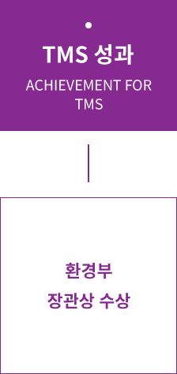

유해물질 배출정도
실시간으로 점검하고 뱅재설비를 효율적으로 운용하여 유해물질 배출을 최소화하는 시스템을 환경부의 해당 기관과 직접연결하여
폐기물처리에 대한 완전한 투명성을 보장하고 있습니다.

TMS를 적극적으로 활용하여 활용하여 공정 개선은 물론 원가 절감을 이루었으며,
2003년 8월 전국 154개의 사업장을 대상으로 실시한 ‘TMS’우수운영 사례 발표 에 공모하여
환경부 장관상을 수상했습니다.
굴뚝자동특정시스템이란?
[ TMS : Tele - Monitoring System ]
TMS란Tele - Monitoring System의 약어이며, 대기, 수질 등 환경오염물질 배출농도를 자동측정기로 상시 측정하여
오염물질 배출상황을 상시 감시하는 시스템을 말합니다.